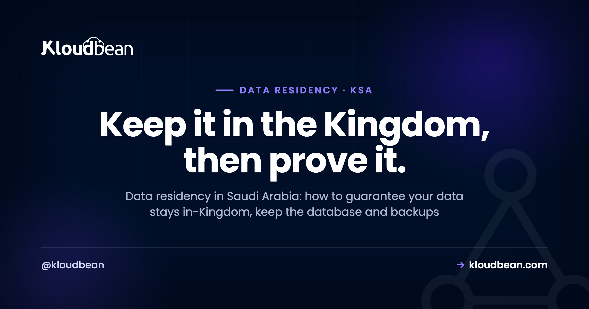
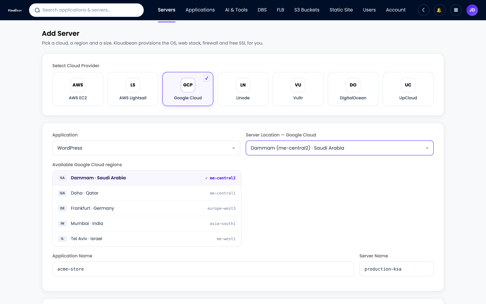
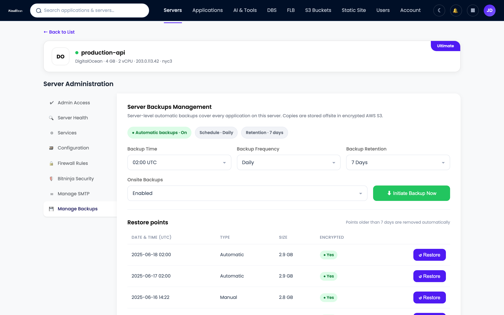

Data Residency in Saudi Arabia: How to Keep Your Data In-Kingdom

You close a deal with a Saudi bank or a government supplier, and the security review comes back with one line: where is our data stored? That question is what data residency in Saudi Arabia comes down to. Not the cloud brand. Not the vCPU count. The country your bytes physically sit in. This is a guide to keeping data in Saudi Arabia for real: how in-Kingdom residency works, the spots where your data quietly slips out of the country (a backup, a CDN edge, a third-party API), and how to verify it so you can answer that email without guessing.
Most teams treat this as a lawyer problem. It's mostly an engineering one, decided the moment you pick a region, then re-checked whenever something new starts holding a copy. Get it right at launch and the security review is a shrug. Get it wrong and you're migrating a live database while a procurement clock runs down.
Launch on an in-Kingdom region and keep every copy there. On Kloudbean that region is Google Cloud's Dammam (me-central2), physically inside Saudi Arabia: pin the server to it, launch the managed database in the same region, and make sure backups write in-region. Then verify the parts that move quietly, your CDN cache, logs, and any third-party service you send data to. Residency is set at launch and checked on a schedule, never assumed.
Data residency vs data sovereignty in Saudi Arabia
Data residency is where your data physically lives: the country and data center that hold the actual bytes. Data sovereignty is the consequence of that location: whichever country holds the data, its laws reach it. The two travel together. Store data inside Saudi Arabia and you've placed it under Saudi law, including the Personal Data Protection Law (PDPL). Store it in Frankfurt and you've handed it to EU rules instead.
So data sovereignty in Saudi Arabia isn't a separate switch. It comes bundled with the location: put the bytes in the Dammam region and Saudi jurisdiction applies. That's what people miss when they shop on price alone. Choosing a region is choosing a legal regime, not just a latency number. New to the concept? The plain-English version is in data residency explained; this page is the Saudi-specific take.
One more line worth keeping straight. Residency is about location. PDPL data residency expectations go further, covering what you may do with personal data on people in the Kingdom and when it may cross a border. Keeping data in-Kingdom answers the location question, not the rest of PDPL.
Why data residency in Saudi Arabia matters
Three things push Saudi-facing teams toward in-Kingdom data, and none is really about speed. Latency is real too, and the cloud hosting in Saudi Arabia pillar covers it. Here the drivers are legal and commercial.
PDPL and SDAIA. Saudi Arabia has a genuine data-protection law, the PDPL, overseen by SDAIA (the Saudi Data and AI Authority). It governs how personal data on people in the Kingdom is collected, processed, and moved abroad. For plenty of workloads, especially government-adjacent, financial, and health data, keeping that data in-Kingdom is expected or effectively required. Residency doesn't make you compliant by itself, but it removes the hardest part to retrofit later: location.
Procurement asks first. "Where is my data stored?" is often the opening question in a Saudi tender, not the closing one. A clean answer (your data sits in the Dammam region, inside Saudi Arabia) keeps the deal moving; "Europe, but it's very secure" tends to stall it. Vision 2030 and the Kingdom's cloud-first direction have only sharpened that expectation.
Trust, plainly. Local customers increasingly want to know their data doesn't leave the country. Being able to say it does not, and point at where it lives, is a selling point. In-Kingdom data is now part of how Saudi buyers judge whether you take them seriously.
Here's the goal in one picture: every copy of your data inside one Saudi boundary, and the one copy that tries to escape, usually a backup or a cache, stopped at the border.
How to guarantee your data stays inside Saudi Arabia
Guaranteeing residency is less about one big setting and more about making every copy land in the same place. Four things carry the weight; get all four into the Dammam region and your data provably stays in the Kingdom.
1. Pin the server to the in-Kingdom region
This is the decision that anchors everything else. When you add a server you choose the cloud and the region. Among Kloudbean's seven clouds (AWS, AWS Lightsail, Google Cloud, Linode, Vultr, DigitalOcean, and UpCloud), the in-Kingdom option is Google Cloud's Dammam region, me-central2, physically inside Saudi Arabia. Other providers run Saudi regions too, but that GCP region is the in-Kingdom choice in Kloudbean's lineup. Pick it and your server lives in the Kingdom; pick a vague "Middle East" label and you might land in Bahrain, the UAE, or Europe instead. Confirm the exact region, not the marketing word.

2. Keep the database in the same region
Your database is where the personal data actually lives, so it matters most. Launch the managed engine (PostgreSQL, MySQL, MariaDB, Redis, and more) into the same Dammam region, on a private network (VPC) rather than the open internet. A common mistake we see is moving the app in-Kingdom while the database quietly stays in a default US or EU region, so the sensitive data never actually came home. Same region for both, every time. The full app-and-database wiring is in how to add a managed database to your app. The only Saudi-specific step is pinning the region to Dammam first. The database-specific version of this, across all seven managed engines, is managed databases with Saudi data sovereignty.
3. Make sure backups stay in-Kingdom
Here's the copy that breaks residency most often. A backup is a full copy of your database. If it writes to a bucket in another country, your data now lives in two places, one of them outside the Kingdom, silently. Automatic backups are the safety net; the destination region is what decides residency. Check that backups land in the same Dammam region as the primary. On a managed setup that check takes a minute; skipping it can cost you a deal.

4. Watch the third parties and the CDN edge
This one is sneakiest: it lives outside your server. Every service you forward data to has its own residency: a payment processor, an email sender, an analytics tool, an LLM API. Your residency is only as tight as those vendors. A CDN is the same story (great for public assets, a leak if it caches personal responses). Map them before someone asks. In-Kingdom infrastructure with a US analytics pipeline bolted on is not in-Kingdom data.
Where in-Kingdom data quietly leaks out
Teams rarely fail residency at the server. They fail it at the copies. Two anti-patterns account for most of it, both invisible until an auditor or a customer looks.
The backup that left the country. You launch in Dammam, feel done, and never check where backups write. Months later a security questionnaire asks for your backup location, and you find the nightly snapshot has been landing in a global bucket in Europe. The primary was in-Kingdom. The copies were not. On paper your data left Saudi Arabia every night at 2am. Fixing it later means re-pointing backups and explaining the gap. Far cheaper to check on day one.
The CDN that cached personal data. A CDN in front of your site is great for a public landing page. But switch on aggressive caching without thinking, and it can start holding authenticated, personal responses (an account page, an order confirmation) at edge nodes in dozens of countries. Now copies of Saudi residents' data sit on servers worldwide, the exact thing residency was meant to prevent. The mistake is never checking where those copies land. Cache public assets at the edge; keep personal, authenticated responses on your in-Kingdom origin.
How to verify your data is really in-Kingdom
Residency you can't prove is residency you don't really have. When a procurement team asks "where is my data stored?", the answer needs evidence, not a shrug. Here's the check I'd run before signing anything, and again on a schedule: walk each copy of your data and confirm its region. The table below is the whole audit.
| Copy of your data | How to confirm it's in-Kingdom | Where it silently escapes |
|---|---|---|
| Application server | Region label reads Dammam (me-central2) in the console | A "Middle East" label that's actually Bahrain, the UAE, or an EU region |
| Managed database | Launched in the same Dammam region, on the private network | Left in a default region while only the app moved in-Kingdom |
| Backups | Backup destination shows the same Dammam region | Snapshots defaulting to a global or nearest-region bucket abroad |
| Object storage / uploads | Bucket region set to Dammam | A bucket created in a us or eu default without noticing |
| CDN cache | Only public, static assets cached at the edge | Authenticated or personal responses cached at worldwide edges |
| Logs and analytics | Log sink and analytics store in-region, or carry no personal data | Request logs with IPs and emails shipped to a US SaaS |
| Third-party APIs | Each vendor's data region documented and in scope | Payment, email, or LLM APIs processing personal data abroad |
It takes an afternoon the first time, minutes on each re-check. The payoff is a straight answer with receipts: server, database, and backup regions, plus a short list of vendors and their data locations. That one-page document beats any amount of "trust us" in a Saudi security review.
What residency does not cover: PDPL is bigger than location
Now the honest boundary, because overclaiming here is how trust dies. Hosting in the Kingdom settles where your data lives. It does not make you "PDPL compliant" on its own, and no host can hand you that. PDPL is broader than residency: lawful basis, consent, retention, user disclosures, and data-subject requests. All of that is app-level work you own, wherever the servers sit.
The clean way to think about it is shared responsibility. The platform provides the infrastructure controls: the in-Kingdom region, the private network, automatic backups, baseline firewalling with Shorewall and Fail2ban, access control. You own the data practices on top. Kloudbean makes no certification claim on your behalf; be wary of any host that says hosting alone makes you compliant. The same shared-responsibility logic runs through GDPR-compliant hosting and maps cleanly onto PDPL; for the Saudi-specific angle, see PDPL compliance hosting. Treat this as a map, not legal advice, and confirm the details with someone qualified for a high-stakes tender.
My honest read after watching a lot of these reviews: most Saudi-facing teams don't need an exotic sovereign-cloud contract. They need their data physically in the Kingdom and a documented answer for procurement. Two different jobs, and the second is solved by the first plus a habit of verifying the copies. If you're weighing managed hosts for the region, this comparison of Cloudways alternatives is a useful sanity check on who actually lets you pin a region.
Keep your data in the Kingdom, and be able to prove it.
Launch a managed server and database in Google Cloud's Dammam region (me-central2), keep backups in-region, and manage the whole stack from one dashboard, so "where is our data stored?" has a one-line answer. Plans start from $8/mo, Enterprise is custom. Start at kloudbean.com, see options on pricing.
In-Kingdom GCP Dammam region · Managed database in-region · Automatic backups · Private networking · Free migration assistance · Free trial
FAQ
How do I guarantee my data stays inside Saudi Arabia?
Launch on an in-Kingdom region and keep every copy there. On Kloudbean that's Google Cloud's Dammam (me-central2): pin the server to it, launch the managed database in the same region, and confirm backups write in-region. Then check the copies that move quietly, your CDN cache, logs, and any third-party service you send data to.
What is the difference between data residency and data sovereignty in Saudi Arabia?
Data residency is where your data physically sits. Data sovereignty is the legal result: whichever country holds the data, its laws apply, so data in Saudi Arabia falls under Saudi law including the PDPL. Picking the Dammam region also picks Saudi jurisdiction; you don't choose them separately.
Which region keeps my data inside Saudi Arabia?
On Kloudbean, it's Google Cloud's Dammam region, code-named me-central2, physically inside Saudi Arabia. That's the in-Kingdom option among Kloudbean's clouds. Regions marketed as "Middle East" sometimes sit outside the country, so confirm the exact region label.
Do backups affect data residency in Saudi Arabia?
Yes, and this is the most common leak. A backup is a full copy of your data, so if snapshots write to a bucket in another country, your data now lives outside the Kingdom too. Confirm the backup destination is the same Dammam region as your primary database, and keep it there.
Can a CDN break in-Kingdom data residency?
It can. A CDN caches copies of your content at edge nodes worldwide, which is fine for public, static assets. It becomes a residency problem if you let it cache authenticated or personal responses, because copies of Saudi residents' data then spread across many countries. Cache public assets; keep personal responses on your in-Kingdom origin.
Does hosting in Saudi Arabia make me PDPL compliant?
No. Hosting in the Dammam region settles the location question, a real and hard-to-retrofit part of PDPL, but not the whole law. You still own lawful basis, consent, retention, disclosures, and data-subject rights at the application level. Compliance is shared: the platform provides infrastructure controls, you own the data practices.
How do I prove to a procurement team that my data is in-Kingdom?
Document each copy and its region: the server, the database, the backups, object storage, and every third-party vendor you forward data to. Confirm each reads Dammam (me-central2) or is otherwise in scope. A short one-page residency summary answers "where is my data stored?" far better than a verbal assurance.
Does Kloudbean own a data center in Saudi Arabia?
No, and be wary of any managed host that claims to. Kloudbean provisions and fully manages your stack on top of major cloud providers, and the in-Kingdom capability comes from Google Cloud's Dammam region (me-central2). Its job is to run, secure, and back up your server and database in that region.
Where is my data stored if I don't choose a region?
It lands in whatever the default is, often a US or EU region, not Saudi Arabia. That's how teams end up hosting a Saudi audience abroad by accident. Because you pick the cloud and region at launch, in-Kingdom residency is a deliberate choice, not something that happens by default.